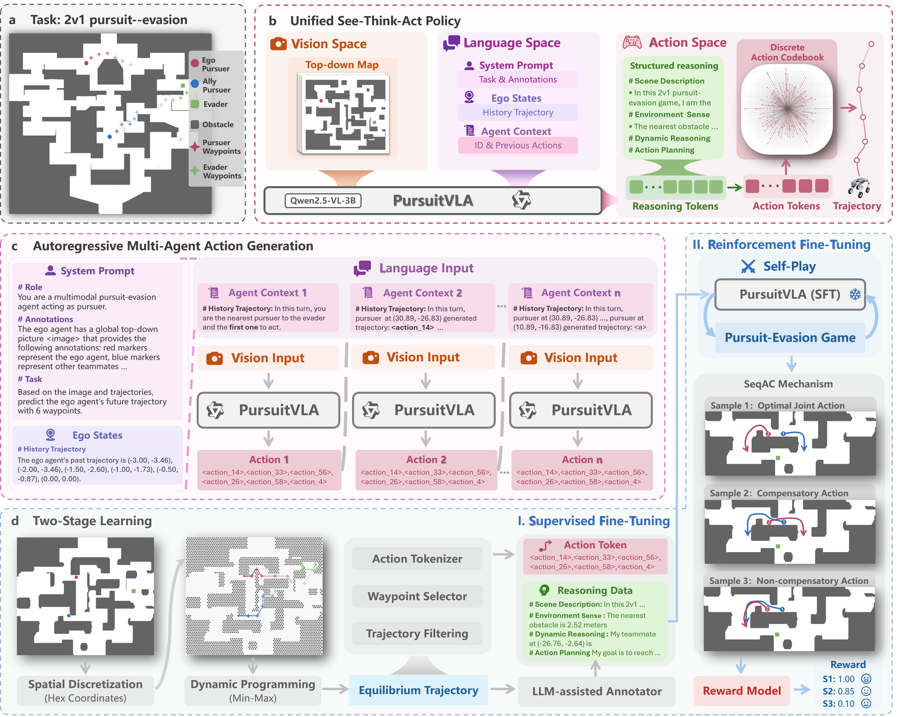
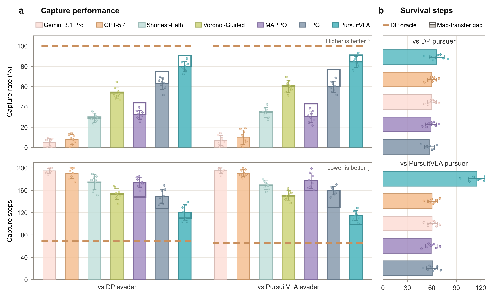
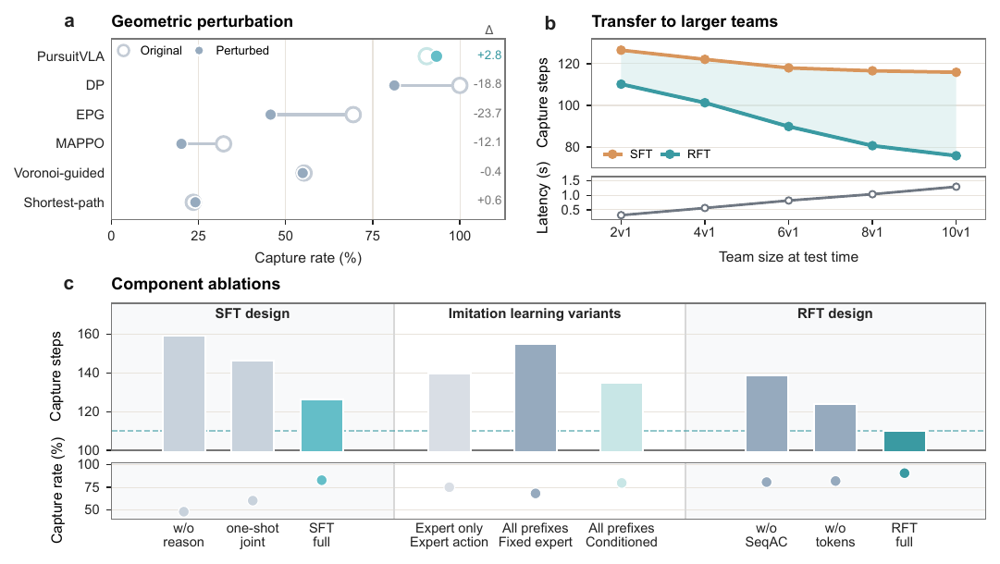
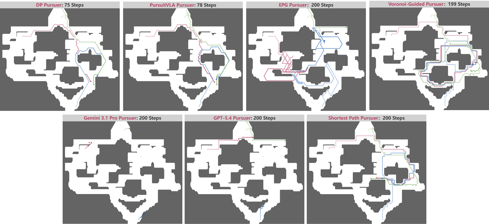
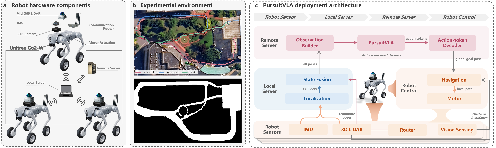

Executable VLA policy
Visual observations and multi-agent context are mapped to reasoning traces followed by waypoint action tokens.
Anonymous project page
A unified autoregressive policy that turns visual geometry, strategic reasoning, and teammate-conditioned action generation into executable multi-agent pursuit.
01 / Overview
Pursuit-evasion games require pursuers to coordinate over long adversarial interactions and complex map geometry while producing executable actions. PursuitVLA is an autoregressive vision-language-action policy that generates reasoning traces and waypoint tokens directly from top-down observations and multi-agent states.
Training first uses dynamic-programming demonstrations with strategic reasoning, then applies reinforcement fine-tuning with Sequential Action Compensation (SeqAC). SeqAC scores candidate actions at intermediate states induced by policy-generated teammate prefixes, allowing later pursuers to compensate for earlier deviations.
The same role-conditioned policy controls pursuers and evaders. It transfers across unseen maps, remains robust to local geometry changes, scales beyond the 2v1 training setting, and transfers from simulation to a closed-loop outdoor deployment.
Visual observations and multi-agent context are mapped to reasoning traces followed by waypoint action tokens.
Reinforcement fine-tuning evaluates actions from policy-induced intermediate states instead of replaying an idealized teammate prefix.
The same checkpoint transfers to unseen layouts, larger teams, and a closed-loop outdoor robot system.
02 / Method
Each decision step is generated autoregressively. The policy reads the current map and agent state, reasons about geometry and interaction, emits a short waypoint plan, and appends that plan before generating the next pursuer decision.

A top-down map, task instruction, ego state, and recent action context form a single multimodal query.
Continuous trajectories are discretized into a compact codebook of executable local displacements.
SeqAC trains later agents to respond to the state that actually results from earlier policy decisions.
03 / Results
The evaluations cover unseen topologies, local obstacle edits, larger pursuer teams, and comparisons against geometric, graph-based, and prompted multimodal baselines.

79.6%
PursuitVLA reaches 79.6% capture in 120.5 mean steps, compared with 63.0% and 149.1 steps for EPG, without retraining or map-specific graph reconstruction.
93.3%
When obstacles are added or removed locally, the policy responds to the updated visual geometry and stays close to its original performance.
10v1
A policy trained in the 2v1 setting transfers to larger pursuer teams, with capture steps decreasing as additional pursuers coordinate.

04 / Qualitative behavior
Pursuers use different free-space routes as the map geometry changes, while the evader is controlled by the same role-conditioned policy.

05 / Hardware transfer
The simulation-trained policy controls two pursuers against a DP-controlled evader without additional policy training. Case 1 and the most challenging Case 4 are available below; Cases 2 and 3 will be added after editing.

Video will be added after editing is complete.
Video will be added after editing is complete.
06 / Reference
This page intentionally omits author and affiliation information during anonymous review.
@inproceedings{pursuitvla2027,
title = {PursuitVLA: An Executable Vision-Language-Action Policy for Zero-Shot Generalization in Pursuit-Evasion Games},
booktitle = {International Conference on Learning Representations},
year = {2027}
}